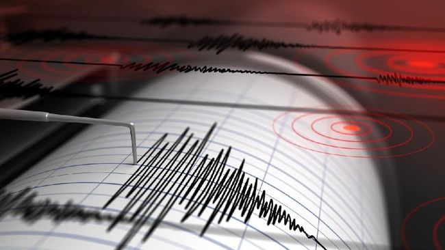

Gempa berkekuatan 6,9 SR mengguncang Poso, Jumat (12/4) sekitar jam 7.40 malam waktu Indonesia Tengah. Selang beberapa menit Badan Meteorologi, Klimatologi dan Geofisika mengeluarkan peringatan dini tsunami di seluruh Sulawesi Tengah. Warga diminta menjauhi kawasan pantai dan waspada dengan segala kemungkinan.Survei Geologi Amerika Serikat (USGS), juga melaporkan gempa yang melanda Sulawesi hari Jumat (12/4) tersebut.
Belum ada laporan mengenai kerusakan atau korban akibat gempa itu. Menurut USGS, gempa berpusat 280 kilometer sebelah selatan provinsi Gorontalo, pada kedalaman 43 kilometer.
Koresponden VOA di Poso, Sulawesi Tengah, Yoanes Litha, melaporkan kepanikan yang terjadi ketika gempa mengguncang wilayah itu.
"Sekitar jam 19.40 WIT guncangan gempa kuat menimbulkan kepanikan warga yang berhamburan dari rumah masing-masing. Warga histeris, anak-anak menangis. Belum diperoleh informasi lebih lengkap dimana pusat gempa dan kekuatannya, tetapi semua warga kini lari ke luar rumah dan kemungkinan akan mengungsi ke tempat yang lebih tinggi. Aliran listrik sempat padam namun sekitar lima menit kemudian aliran listrik normal kembali," jelasnya.
Salah seorang warga Poso, Martianus Zakaria, yang berusia 48 tahun, mengatakan langsung mengeluarkan seluruh anggota keluarganya dari rumah, meski ia sendiri sulit berdiri karena berulangkali hampir jatuh akibat gempa.
"Saya kira kekuatan gempa tadi memang kuat sekali, kencang, saya sendiri ketika mau berdiri hampir jatuh karena pusing kepala. Kuatnya getaran gempa tadi. Kami semua lari berhamburan keluar rumah karena jangan sampai roboh. Anak istri lari keluar ke tempat yang jauh dari bangunan yang mudah roboh," kata Martinus.
Tentang Kami
Web ini berisikan berita tentang bencana alam di Indonesia.Mulai dari gempa bumi, banjir, tanah longsor, dan lain-lain.Kami akan selalu update berita terbaru seputar bencana alam yang terjadi di Indonesia.Melalui Web ini anda juga bisa mengirimkan bantuan terhadap korban bencana alam.Bantuan anda sangat berharga bagi mereka yang membutuhkan.
Berita Lainnya

Badai Savannah

Status Gunung Anak Krakatau Diturunkan

Gempa Bumi Sulawesi Tengah